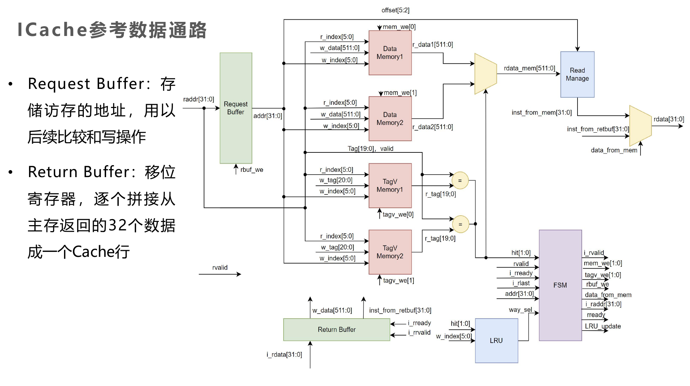
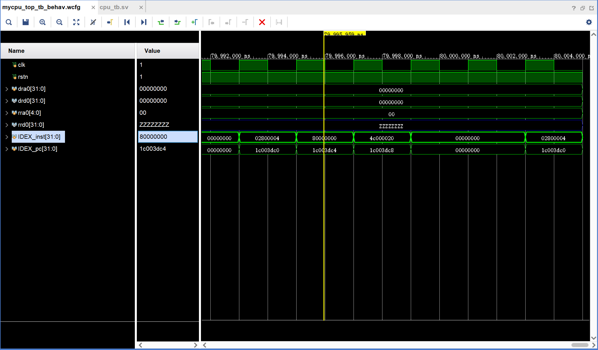

PB22020514 郭东昊
改造5级流水线LA32R CPU，增加指令cache
总体参照马子睿助教给出的参考数据通路，部分信号变量进行了重命名。

ICache设计主要包括CPU和ICache的通信以及状态机的设计。以下是详细的设计思路：
CPU和ICache的通信主要包括发地址和收指令两个部分。
状态机主要包括LOOKUP、MISS和REFILL三个状态。
module data_way (
input wire clk,
input wire rstn,
input wire [7:0] rindex,
input wire [7:0] windex,
input wire [127:0] wdata,
input wire we,
output wire [127:0] rdata
);
reg [127:0] data [0:255];
always @(posedge clk) begin
if (~rstn) begin
integer i;
for (i = 0; i < 256; i = i + 1) begin
data[i] <= 128'h0;
end
end else begin
if (we) begin
data[windex] <= wdata;
end
end
end
assign rdata = data[rindex];
endmodule
module tagv_way (
input wire clk,
input wire rstn,
input wire [7:0] rindex,
input wire [7:0] windex,
input wire [19:0] wtag,
input wire we,
output wire [19:0] rtag,
output wire rvalid
);
reg [20:0] tagv [0:255];
always @(posedge clk) begin
if (~rstn) begin
for (integer i = 0; i < 256; i = i + 1) begin
tagv[i] <= 21'h0;
end
end else begin
if (we) begin
tagv[windex] <= {wtag,1'b1};
end
end
end
assign rtag = tagv[rindex][20:1];
assign rvalid = tagv[rindex][0];
endmodule
//接口声明
module icache (
//和CPU的接口
input wire clk,
input wire rstn,
input wire [31:0] raddr,
output wire [31:0] rdata,
output reg addr_ready,
input wire addr_valid, //接收cpu发的地址
output wire inst_valid,
input wire inst_ready, //向cpu发指令
//和主存的接口
output reg [31:0] inst_mem_raddr,
input wire [31:0] inst_mem_rdata
);
......
//输出控制信号的三段式状态机
//Finite State Machine: Part1
always @(posedge clk) begin
if (!rstn) begin
state <= LOOKUP;
end else begin
state <= next_state;
end
end
//Part2
always @(*) begin
case (state)
LOOKUP: begin
if (valid && miss) next_state = MISS;
else next_state = LOOKUP;
end
MISS: begin
if (is_i_rlast) next_state = REFILL;
else next_state = MISS;
end
REFILL: begin
next_state = LOOKUP;
end
default: begin
next_state = LOOKUP;
end
endcase
end
//Part3
always @(*) begin
case (state)
LOOKUP: begin
addr_ready = rstn;
return_buffer = 128'h0;
inst_mem_raddr_we = 1'b1;
// inst_mem_raddr = {raddr[31:4], 2'b00};
end
MISS: begin
// inst_mem_raddr = inst_mem_raddr + 1;
addr_ready = 1'b0;
retbuf_we = 1'b1;
inst_mem_raddr_we = 1'b1;
end
REFILL: begin
addr_ready = 1'b0;
retbuf_we = 1'b0;
inst_mem_raddr_we = 1'b0;
end
endcase
end
......
//LRU regs
always @(posedge clk) begin
if (!rstn) begin
integer i;
for (i = 0; i < 256; i = i + 1) begin
recently_hit_way[i] <= 1'b0;
end
end else if ((state == LOOKUP) && !miss) begin
recently_hit_way[rindex] <= hit_way2;
end
end
//refill signals
assign wdata = return_buffer;
assign wtag = raddr_reg[31:12];
assign windex = raddr_reg[11:4];
assign way_to_be_replaced = !recently_hit_way[windex];
//return buffer
always @(posedge clk) begin
if (!rstn) begin
return_buffer <= 128'b0;
end else if (retbuf_we) begin
return_buffer <= {inst_mem_rdata, return_buffer[127:32]};
if (inst_mem_raddr == raddr_reg[31:2]) begin
inst_from_retbuf <= inst_mem_rdata;
end
end
end
经过picoLA32r对cpu进行测试，ICache正常工作，能够正确读取指令。
如图，IDEX级指令经过足够多的时钟周期，最后出现了80000000，说明指令读取正常，通过了所有指令的测试

在这次实验中，我深入理解了Cache的工作原理、基本结构、设计和调试方法，以及数据通路和控制器的设计和描述方法。我成功地改造了5级流水线LA32R CPU，增加了指令cache。
在实验过程中，我遇到了一些挑战，例如在设计CPU和ICache的通信以及状态机的设计时，需要仔细考虑每个步骤的逻辑和顺序。
实验结果显示，ICache正常工作，能够正确读取指令，通过了所有指令的测试。
总的来说，这次实验提高了我的verilog编程技能，增强了我对Cache和CPU设计的理解。